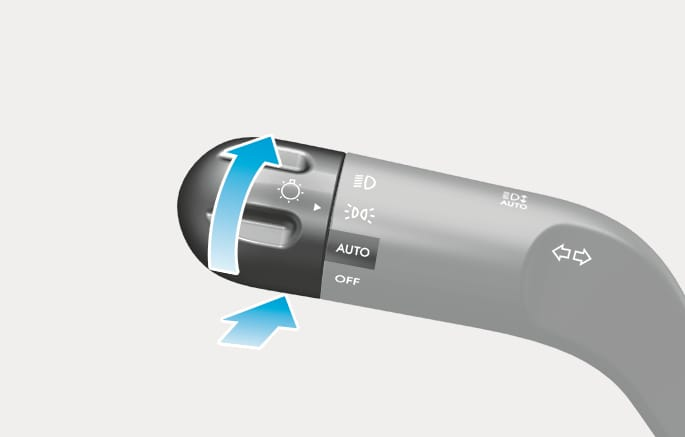

하이빔 보조(HBA)

2C_HBASwitch
마주 오는 차량이나 선행 차량의 조명 등 주변의 광원과 조도를 인식해 주행 속도가 30 km/h 이상일 때 전조등을 자동으로 제어합니다.
-
상향등이 켜지면 클러스터에 전조등 상향(
\ ) 표시등이 켜집니다. -
주행 속도가 20 km/h 미만이 되면 상향등이 꺼지고 하이빔 보조(
Z ) 표시등이 흰색으로 표시됩니다.
HBA는 High Beam Assist의 약자입니다.
차량을 안전한 장소에 정차한 후 인포테인먼트 시스템을 조작하십시오.
-
하이빔 보조 성능을 최적의 상태로 유지하기 위해서는 전방 카메라를 적절하게 관리해야 합니다.
-
전방 카메라의 관리에 대한 자세한 설명은 '인식 센서 및 제한 사항', '전방 충돌방지 보조 (FCA)'에 수록된 안전 정보와 주의사항을 참고하십시오.